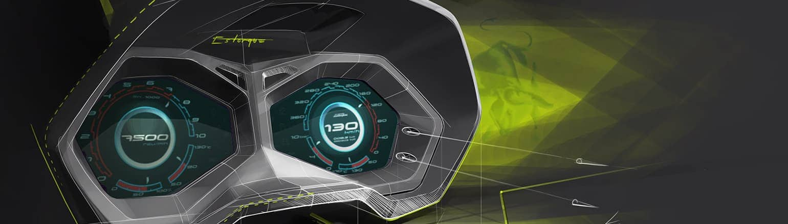

ABOUT LAMBORGHINI

STYLE ACCORDING TO FERRUCCIO LAMBORGHINI
Ferruccio Lamborghini had devised a simple yet effective method to immediately realize the impact that his cars had: while driving, he used to pay careful attention to people at the sides of the road. If they did not turn around in astonishment, the car's style was simply not attractive enough. Lamborghini's cars were conceived to thrill not only the drivers, but also the people around as they went past. A concept that has always been a keystone of the iconic car manufacturer, and over the years it has been developed hand in hand with the general evolution of style and technological progress.

PERFECTION IS ESSENTIAL
Since its establishment, Lamborghini has set innovative design trends in the world of super sports cars, manufacturing models with an unmistakably exquisite personality. With the Aventador and Huracán series, Lamborghini has further perfected its innovative statement of style. The clear-cut proportions show both the power and dynamics those engines are an expression of. Neat edges, sleek lines and flat surfaces seamlessly exhibit minimal design. This purist style is enhanced by the great passion for details of the designers in Sant'Agata Bolognese.
CENTRO STILE
The "Centro Stile" was built in 2004 to be an innovative studio for our talented designers, able to combine the brand's culture and soul with innovation and the constant quest for new looks. This is why the Centro Stile Lamborghini is committed to taking the unrivalled tradition of Italian automotive design into the production processes of the future, without having to resort to contractors for the styling.
In addition, the Centro Stile is located next to the Technical Department for a reason: this way ideas are translated into reality in virtually no time.